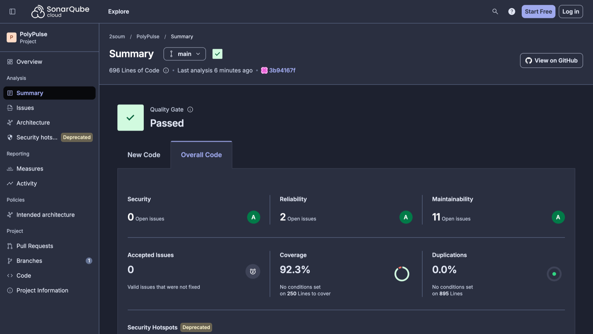
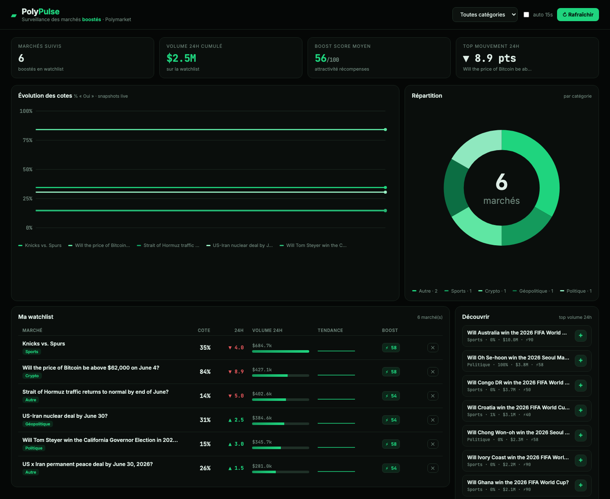
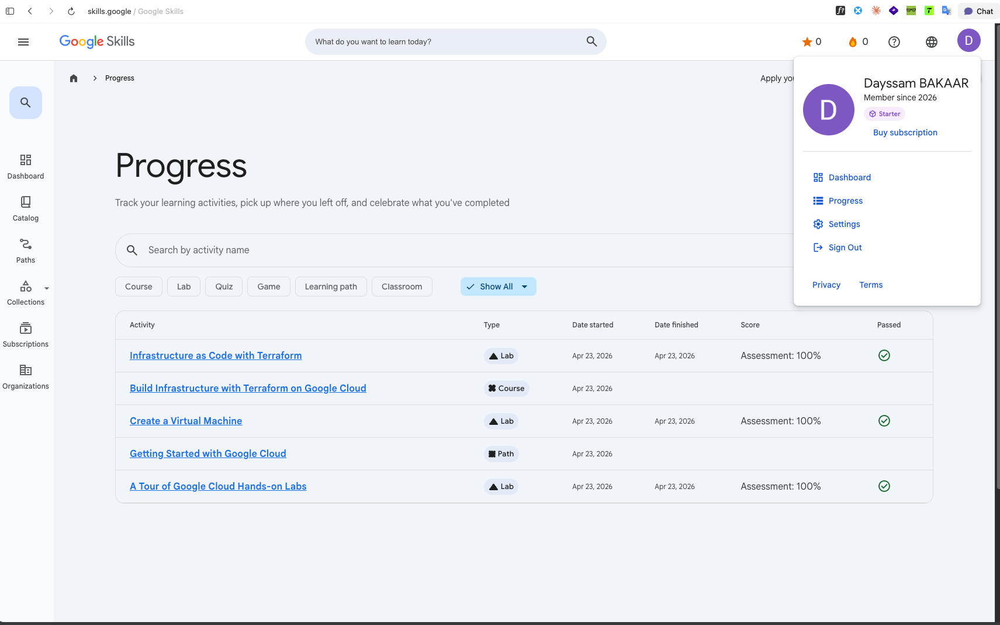
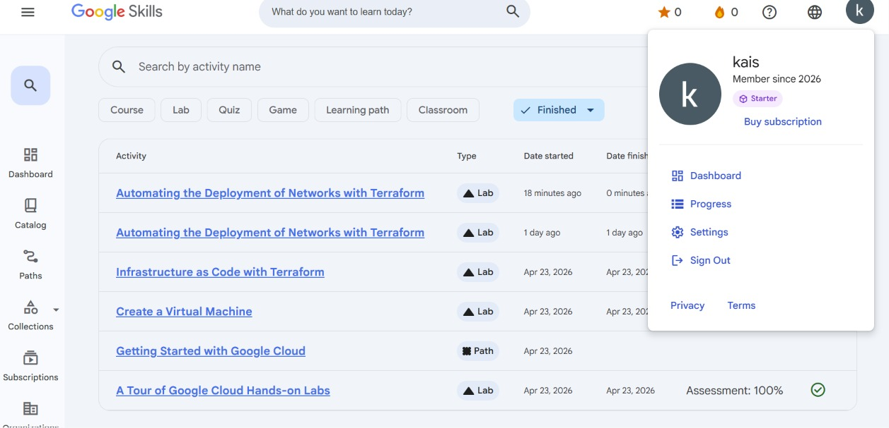

Surveillance des marchés « boostés » de Polymarket — deux micro-services et un dashboard temps réel pour suivre cotes, volumes et récompenses de liquidité.
PolyPulse surveille les marchés de prédiction boostés de Polymarket : ceux qui distribuent des récompenses aux apporteurs de liquidité.
L'utilisateur peut :
watch → poly), et
poly appelle l'API externe Polymarket Gamma. Ces
deux frontières réseau rendent les mocks web exigés par le sujet réellement
nécessaires — à deux niveaux.
watch-service porte le domaine (watchlist, snapshots, KPIs) ;
poly-service est un service de calcul sans état encapsulant Polymarket.
watchController.tswatchService.ts, polyGateway.tsWatchRepository, SnapshotRepository (Postgres)marketController.tsmarketService.ts, polymarketClient.ts, marketNormalizer.tsCategoryRepositoryWatchRepository,
PolymarketClient, PolyGateway…). Les implémentations en mémoire et
PostgreSQL sont interchangeables sans impact sur les couches supérieures.
| Service | Tests | Statements | Branches | Functions | Lignes |
|---|---|---|---|---|---|
| poly-service | 41 | 98.16 % | 91.89 % | 100 % | 97.93 % |
| watch-service | 37 | 97.27 % | 94.33 % | 100 % | 97.12 % |
Couverture lignes globale (230 / 236 lignes exécutables)
jest.config.js
(coverageThreshold : 80 % branches / 85 % lignes). La CI échoue sous ces
seuils — la qualité est verrouillée automatiquement.
| Couche | Type | Outils | Exemple |
|---|---|---|---|
| Data | Unitaire | Jest | categoryRepository.test.ts |
| Services | Unitaire + mocks | Jest, nock | watchService.test.ts |
| Controller | Intégration HTTP | Supertest, nock | watchController.test.ts |
| Inter-service | Mock web | nock | polyGateway.test.ts |
poly → Polymarket Gamma (API externe)watch → poly (appel inter-service)→ tests isolés et déterministes, sans réseau.
strict (+ noUnused*).editorconfig
docker-compose.yml orchestre 4 conteneurs : watch-service,
poly-service, postgres et frontend. Chaque service
back a un Dockerfile multi-stage (build TypeScript → image
node:22-alpine) avec HEALTHCHECK.
| Étape | Job | Action |
|---|---|---|
| 1 | test (matrice ×2) | npm ci → lint → build → test:coverage |
| 2 | test | publication des rapports de couverture en artefacts |
| 3 | docker | build des 3 images + docker compose config |
| 4 | sonarcloud | couverture des 2 services → SonarQube Cloud Scan (Quality Gate) |
| Exigence | Statut | Réalisation |
|---|---|---|
| Dépôt Git | ✔ | dépôt public — github.com/2soum/PolyPulse |
| Pipeline CI | ✔ | GitHub Actions (lint·build·test·docker) |
| Architecture en couches | ✔ | Data / Services / Controller |
| ≥ 2 services back + Docker | ✔ | watch-service + poly-service |
| Tests de toutes les couches | ✔ | Jest + Supertest + nock |
| Bonne couverture | ✔ | ~97 % lignes, seuils imposés |
| Qualité élevée | ✔ | TS strict · ESLint · Prettier |
| Analyse qualité (SonarQube Cloud) | ✔ | Quality Gate Passed · A/A/A · 0 bug · 0 vulnérabilité (§ 5) |
| Bonus — Front web | ✔ | dashboard (graphes, filtres) |
| Bonus — Base de données | ✔ | PostgreSQL (watchlist + snapshots) |
À chaque push, la CI lance une analyse SonarQube Cloud (avec import de la couverture des deux services) et applique un Quality Gate bloquant. C'est le « rapport de qualité » exigé par le sujet — mesuré automatiquement, et public.
tssecurity:S7044 (un id client inséré dans le chemin d'une URL →
injection de chemin / SSRF). Corrigées par une validation en liste blanche +
encodeURIComponent (avec tests) → note de sécurité C → A.

2soum_PolyPulse : Quality Gate Passed, notes A/A/A, couverture 92.3 %, duplication 0 %.
Front web (bonus) servi par nginx, thème sobre noir & vert. Il interroge
watch-service et affiche en temps réel :

Les deux membres du binôme ont suivi les parcours et labs Google Cloud (Skills Boost) — chaque évaluation validée à 100 % :


poly-service renvoie un 502 en cas d'indisponibilité (testé).
Sorties réelles et reproductibles des outils — les rapports de tests, de couverture et de
qualité exigés par le sujet. Reproductibles en local (make coverage,
make lint) et rejouées à chaque push par la CI.
| poly-service | Stmt | Branch | Lignes |
|---|---|---|---|
| app.ts | 100 | 100 | 100 |
| config.ts | 100 | 80 | 100 |
| controller/marketController | 95.2 | 88.9 | 95 |
| data/categoryRepository | 100 | 100 | 100 |
| services/marketNormalizer | 96.7 | 90.2 | 96.2 |
| services/marketService | 100 | 100 | 100 |
| services/polymarketClient | 100 | 100 | 100 |
| Tous fichiers | 98.2 | 91.9 | 97.9 |
| watch-service | Stmt | Branch | Lignes |
|---|---|---|---|
| app.ts | 100 | 100 | 100 |
| config.ts | 100 | 80 | 100 |
| errors.ts | 100 | 100 | 100 |
| controller/watchController | 89.5 | 91.7 | 89.5 |
| data/snapshotRepository | 100 | 100 | 100 |
| data/watchRepository | 100 | 100 | 100 |
| services/polyGateway | 100 | 100 | 100 |
| services/watchService | 100 | 93.8 | 100 |
| Tous fichiers | 97.3 | 94.3 | 97.1 |
Couverture des fonctions : 100 % (71/71) sur les deux services · colonnes en %.
| Contrôle | Commande | Résultat |
|---|---|---|
| Tests | npm test · Jest + Supertest + nock | 78 / 78 ✔ · 11 suites |
| Lint | npm run lint · ESLint | 0 erreur · 0 warning |
| Compilation | npm run build · tsc strict | OK · 0 erreur |
| Seuils couverture | coverageThreshold (jest.config) | ≥ 80 % br. / 85 % lignes — tenus |
| Analyse Sonar | sonarqube-scan-action · CI | Quality Gate Passed · A/A/A |
push.